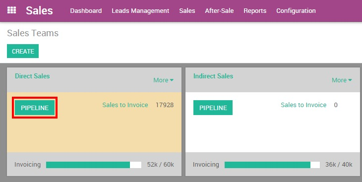
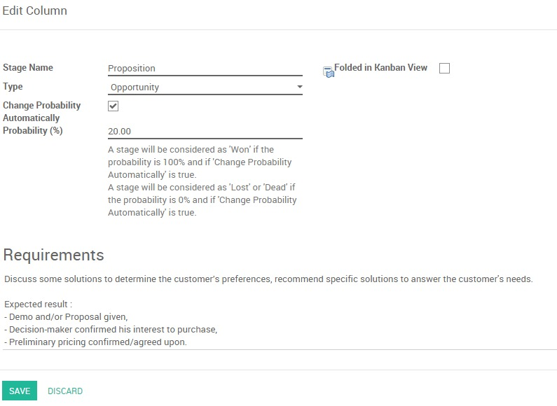

一个结构良好的销售管道是为了保持对你销售过程的控制，并有对您的线索，机会和客户有360度视图。
销售管道是销售过程的可视化表示，从第一次接触到最终成交。它是指由您生成的，通过你的销售周期和资格结束线索的过程。在YuanCloud CRM中，线索在看板视图销售管道的左端，再沿向右从一个阶段移动到另一个。
每个阶段指在销售周期中的具体步骤和特别是你的潜在客户的销售准备。阶段数量在销售漏斗中各个公司是不同的。比如一个销售漏斗包含下列阶段：领域，资格认证，资格认证的保证，主张，谈判，赢得，丢失。

当然，每个组织对销售渠道的定义取决于它们的流程和工作流，所以多点或少一点的阶段都有可能。
生成和组织你的阶段
增加/重新安排阶段
从销售模块，进入你的仪表板和点击选中的销售团队的**管道按钮**。如果你没有任何销售队伍，你需要首先创建一个。
从你的管道看板视图中，您可以通过点击**添加新列**添加阶段。当创建一个列，YuanCloud将自动建议你为了完成你的过程而添加另一列。如果你想重新排列阶段的顺序，你可以很容易地通过拖放移动列到所需位置。
小技巧
你可以增加任意多的阶段，但我们建议为了保持清楚的管道最好不要超过6列。
激活线索阶段
有些公司使用一个预先验证步骤来管理他们的线索，在将它们转换成机会之前。要激活领先阶段，请访问：菜单选择：[UNKNOWN NODE problematic]配置 - > Settings`并选择单选按钮，如下图所示。这将创造一个新的子菜单**线索**在**销售**下面，让您可以访问所有的线索列表视图。

设置阶段概率
什么是阶段概率
为了更好地了解什么是完成交易对于在你管道中一个给定的机会，你必须为每个阶段设置概率百分比。这一比例是指完成交易的成功率。
注解
建立阶段的概率是至关重要的，如果你想估计你销售周期的预期收入。
比如，如果你的销售周期包含阶段*领域，资格认证，资格认证保证，主张，谈判，赢得 和丢失，* 然后你的工作流就可以这样：
领域：机会刚刚从线索管理接收或创建从陌生的呼叫活动。顾客的兴趣还没有被证实。
成功率 : 5%
合格：前景的业务和工作流程的了解，痛点的鉴定，确认，预算和时间是已知的。
成功率 : 15%
资格发起人：与决策者直接接触已经完成
成功率 : 25%
提案：潜在顾客收到了一个报价
成功率 : 50%
谈判：和潜在客户针对给他的报价进行谈判
成功率 : 75%
赢得：潜在客户确认了给他的报价单，已经收到销售订单，他现在已经是客户了
成功率 : 100%
失落：前景不再有兴趣
成功率 : 0%
小技巧
对于你的管道，每个阶段应该对应于一个相应的概率。每当你移动你的机会到下一阶段，您的销售的概率会自动适应。
你应该考虑使用**100**作为赢得交易的概率，使用**0**作为失去机会的概率。
如何设置阶段概率
编辑一个阶段，点击**设置**在选定的阶段的编辑上。
自动选择更改概率复选框让YuanCloud适应机会在阶段中中定义的几率。例如，如果设置为0％(丢失)或100％(赢得)的概率，YuanCloud分配相应的阶段当机会被标记为丢失或赢得。
小技巧
在需求字段可以输入这一阶段的内在要求。当您将鼠标移到阶段的名字就会出现一个提示。